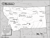

Montana

Attention: If you use this or any of
the AIRS lists in any state, please report any bad phone numbers or emails to
the webmaster. This is the
responsibility of all users, including you. Thank you!
Kevin Reeves
CROSSROADS: Hwy 10 w./Hwy 93, Interstate 90
Missoula, 59808
ONLY CALL IF EMERGENCY PHONE: (406)-549-9076
VW'S: !972 transporter, high top camper
COMMENTS: I pursue mountaineering and climbing related activities
AVAILABLE: I have no specific schedule
familiar with: 1776+, dual carbs
I CAN PROVIDE THE FOLLOWING SERVICES:
INTERNET ACCESS
TOOLS
TELEPHONE ACCESS
TRANSPORTATION HELP
MECHANICAL HELP
STORAGE SPACE
PARTS AVAILABLE
Favorite beer type: Anything cold
rob & libby Knotts
(rek@midrivers.com)
CROSSROADS: 60 miles no. of I-90
Lambert, 59243
ONLY CALL IF EMERGENCY PHONE: 406-774-3778
VW'S: '71 bus
COMMENTS: a vw neophyte(sp)w/ shop-space, beds, sauna, and sympathetic ear.
AVAILABLE: 24/7
I CAN PROVIDE THE FOLLOWING SERVICES:
INTERNET ACCESS
TOOLS
TELEPHONE ACCESS
TRANSPORTATION HELP
SPACE TO WORK ON BUS
STORAGE SPACE
CAMPING SPOT: yes SPARE ROOM: MOVE IN!!! :)
Favorite beer type: Micro brands
Billy
EMAIL: billymray@yahoo.com
CROSSROADS: Interstate 90 and US 93
Missoula, 59801
VW'S: 1972 Camper
COMMENTS: Not an experienced mechanic, but I have manuals and some tools. Camping is
available either a tent in the yard or in the pop-up parked on the street. Indoor
shop, but no garage door. Plenty of room in front of house for repairs.
AVAILABLE: Evenings until around 10-11pm and weekends (usually)
I am familiar with: dual carbs
I CAN PROVIDE THE FOLLOWING SERVICES
INTERNET ACCESS
TELEPHONE ACCESS
SPACE TO WORK ON BUS
CAMPING: 2 nights SPARE ROOM: none
Favorite beer type: Micro brands
John M. Richards
EMAIL: jmr@cybernet1.com
CROSSROADS: 167 McCarthy Loop
CITY: Hamilton, 59840
PHONE: 406-363-0973
VW'S: 1967 Type 2, Double Cab, 71 westy, 2002 Turbo GTi,
COMMENTS: Have basic tools. Have warm garage (winter in Montana can be chilly)
Driveway,parking space etc. Can serve as resource to very good air cooled
mechanics in the valley. Have a Bentley for 65-67 type 2. Call on the way thru,
coffee, chat, local info etc.
AVAILABLE: Am usually available. Am known to travel once in awhile though.
I am familiar with: 1600
I CAN PROVIDE THE FOLLOWING SERVICES
INTERNET ACCESS
TOOLS
TELEPHONE ACCESS
TRANSPORTATION HELP
MECHANICAL HELP
SPACE TO WORK ON BUS
STORAGE SPACE
COFFEE/TALK
CAMPING: none SPARE ROOM: 3 nights
Favorite beer type: Beer is for wimps!
John M. Richards
EMAIL: jmr@cybernet1.com
CROSSROADS: US 93 & Marcus
Hamilton, 59840
PHONE: 406-363-0973
VW'S: 1967 Dbl Cab. 2002 GTi 1.8 T
COMMENTS: Am willing to help in any way I can. Have access to at least three
very good "wrenches" (mechanics) here in the valley. Have a heated
garage, some basic tools, have a Bentley for 63-67 Type II.
AVAILABLE: Retired, usually available
I am familiar with: 1600
I CAN PROVIDE THE FOLLOWING SERVICES
INTERNET ACCESS
TOOLS
TELEPHONE ACCESS
TRANSPORTATION HELP
MECHANICAL HELP
SPACE TO WORK ON BUS
STORAGE SPACE
COFFEE/TALK
CAMPING: 2 nights SPARE ROOM: 2 nights
Favorite beer type: Beer is for wimps!
David Taylor
CROSSROADS: I-15 / US 12
Helena, 59601
ONLY CALL IF EMERGENCY PHONE: 406 449-5614
VW'S: 68 Type 2
AVAILABLE: anytime
I am familiar with: 1776+, dual carbs, type4 engine
I CAN PROVIDE THE FOLLOWING SERVICES
TOOLS
TELEPHONE ACCESS
TRANSPORTATION HELP
MECHANICAL HELP
SPACE TO WORK ON BUS
STORAGE SPACE
SOME PARTS
CAMPING: 4 nights or more
Favorite beer type: Anything cold
Dave Jones
EMAIL: jennydavey_at_montana_dot_com
CROSSROADS: I-90 and U.S. 93
Missoula, 59801 PHONE: 406 721-0311
VW'S: 87 Syncro Westy
COMMENTS: I've got a Tiico conversion and "know" it pretty well.
AVAILABLE: Anyday till 6am to 10pm
I am familiar with: wasserboxer, conversions
I CAN PROVIDE THE FOLLOWING SERVICES
INTERNET ACCESS
TOOLS
TELEPHONE ACCESS
TRANSPORTATION HELP
MECHANICAL HELP
SPACE TO WORK ON BUS
CAMPING: 1 night
SPARE ROOM: 1 night
Favorite beer type: Micro brands
bighoof
EMAIL: bryce_at_bighoof_dot_com
CROSSROADS: Hwy 2 & Montana 93
CITY: Kalispell
VW'S: 1966 Kombi, 1965 Westfalia, 1988 Vanagon Synchro
ONLY CALL IF EMERGENCY
COMMENTS: Phone 406/552-4062 or 406/752-1211
AVAILABLE: 24 Hours
I am familiar with: 1300, 1500, 1600, dual carbs, fuel injection, type4 engine,
diesel, conversions
I CAN PROVIDE THE FOLLOWING SERVICES
INTERNET ACCESS
TOOLS
TELEPHONE ACCESS
TRANSPORTATION HELP
MECHANICAL HELP
SPACE TO WORK ON BUS
STORAGE SPACE
SOME PARTS
CAMPING: 2 nights
SPARE ROOM: 2 nights
Favorite beer type: I don't drink
Sista Sarah
EMAIL: pocomojo_at_hotmail_dot_com
CROSSROADS: I-90 1st Glendive Exit- 5 miles off exit
CITY: Glendive
ZIP CODE: 59330
PHONE: 406-939-2059
VW'S: 1971 Westy, 1998 GTI
COMMENTS: I am headed out to Oregon and will be on the road through 4-5 trying
to get my 71 Westy to Eastern Montana to finish the restoration! Any advise or
help will be much appreciated =0)Give a call if passing through Montana~
AVAILABLE: Anytime after 10 am- 2am call cell phone and leave message if no
answer
I am familiar with: 1600
I CAN PROVIDE THE FOLLOWING SERVICES
INTERNET ACCESS
TELEPHONE ACCESS
TRANSPORTATION HELP
SPACE TO WORK ON BUS
COFFEE/TALK
CAMPING: 2 nights
SPARE ROOM: none
Favorite beer type: Anything cold
Andrew Ford
EMAIL: Andy325_at_comcast_dot_net
CROSSROADS: I83 & Warren Rd.
CITY: Baltimore & Burlington
STATE: MD & VT
ZIP CODE: 21111 & 05401
PHONE: 410-409-1824
ONLY CALL IF EMERGENCY
VW'S: 83 1/2 Campmobile; 68 Porsche 912; 01 Passat
COMMENTS: I am a college student reared with a considerable knowledge for VW's.
The 68 912 was my first car. Can provide a tow, reference several
mechanics if I am unable to assist. Generally ease the pain a little for
breaking down because we all know it happens.
AVAILABLE: I am generally available 24 hrs. a day, 7 days a week.
I am familiar with: 1200, 1300, 1500, 1600, 1776+, dual carbs, fuel injection
I CAN PROVIDE THE FOLLOWING SERVICES
INTERNET ACCESS
TOOLS
TELEPHONE ACCESS
TRANSPORTATION HELP
MECHANICAL HELP
SOME PARTS
CAMPING: none
SPARE ROOM: MOVE IN!!! :)
Favorite beer type: Micro brands
Ryan Rossing
EMAIL: hecubadog_at_hotmail_dot_com
CROSSROADS: I90 & HWY 93
CITY: Missoula
ZIP CODE: 59801
VW'S: 81 Westafalia
COMMENTS: RV Technician
I CAN PROVIDE THE FOLLOWING SERVICES
TOOLS
TRANSPORTATION HELP
MECHANICAL HELP
CAMPING: none
SPARE ROOM: none
Favorite beer type: Thick and chewy
Andy Ambelang
EMAIL: qwestforfun_at_aol_dot_com
CROSSROADS: 50 miles S of I 90 on U.S. 93
CITY: Hamilton
ZIP CODE: 59840
PHONE: 406-363-7660
VW'S: 67 Microbus, 72 Bug
COMMENTS: Getting my bus ready to drive while skiing at Lost Trail
AVAILABLE: I don't have a set schedule
I am familiar with: 1600
I CAN PROVIDE THE FOLLOWING SERVICES
INTERNET ACCESS
TOOLS
TELEPHONE ACCESS
TRANSPORTATION HELP
MECHANICAL HELP
SPACE TO WORK ON BUS
STORAGE SPACE
COFFEE/TALK
CAMPING: 2 nights
SPARE ROOM: none
Favorite beer type: Anything cold
Daniel
EMAIL: batman914_at_hotmail_dot_com
CROSSROADS: Hwy 93, 200, intrst. 90
CITY: Arlee, 59821 PHONE: 406-726-2070
VW'S: '77 Riviera Camper
COMMENTS: I've been there man, in an unfamiliar place with a malfunctioning
injector or whatever. So if you need a hand, I know a little about fuel
injection or I can refer you to a couple good VW mechanics in the area. I
also have a huge wooded yard that is available for fellow V-dubbers or anyone
else with a friendly soul.
AVAILABLE: Mon.-Fri. in Missoula
I am familiar with: fuel injection
I CAN PROVIDE THE FOLLOWING SERVICES
TOOLS
TELEPHONE ACCESS
TRANSPORTATION HELP
MECHANICAL HELP
SPACE TO WORK ON BUS
COFFEE/TALK
CAMPING: 2 nights SPARE ROOM: none
Favorite beer type: Micro brands
Mitch Grady
EMAIL: whc03grady_at_gmail_dot_com
CROSSROADS: I-90, US 12, US 93
CITY: Missoula, 59802 PHONE: 406 549-8019
VW'S: 1974 Westfalia
COMMENTS: Camp on the street, if you want. I have a decent range of tools
(including an ATV jack and a floor jack), but only curbside space to work.
I'm close to downtown Missoula and lots of amenities. I'm pretty familiar
with upright engines and Type 3 and 4 engines, but am by no means a
diagnostician. In other words, I'm good at turning a wrench as long as I
have someone else to help me figure out what to turn it on.
"Commercial brands"="PBR me ASAP"
AVAILABLE: depends
I am familiar with: 1600, type4 engine
I CAN PROVIDE THE FOLLOWING SERVICES
TOOLS
TELEPHONE ACCESS
TRANSPORTATION HELP
MECHANICAL HELP
CAMPING: none SPARE ROOM: none
Favorite beer type: Commercial brands
Kyle Mock
EMAIL: ticktok_at_msn_dot_com
CROSSROADS: Highway 191 & Interstate 90
CITY: Bozeman, 59715 PHONE: 406-582-1015
VW'S: 59 so23 & 60 single cab
AVAILABLE: Available any time
I am familiar with: 25/36hp, Bastard40hp, 1200/1300, 1500/1600
I CAN PROVIDE THE FOLLOWING SERVICES
INTERNET ACCESS
TOOLS
TELEPHONE ACCESS
TRANSPORTATION HELP
MECHANICAL HELP
SPACE TO WORK ON BUS
STORAGE SPACE
SOME PARTS/CAN GET THEM
COFFEE/TALK
CAMPING: 4 nights or more SPARE ROOM: none
Favorite beer type: Room temp will do
Paul
EMAIL: paulmorup_at_aol_dot_com
CITY: Billings, 59102 PHONE: 406-598-2130
VW'S: 1970 Rivera Campmobile 1978 Transporter
COMMENTS: I am not very handy with engines but I've been stranded in the cold
and I know what it's like. If you are close to Billings, I will rescue you and
help in any way I can. What goes around comes around.
AVAILABLE: Call anytime
I CAN PROVIDE THE FOLLOWING SERVICES
INTERNET ACCESS
TOOLS
TELEPHONE ACCESS
TRANSPORTATION HELP
SPACE TO WORK ON BUS
COFFEE/TALK
CAMPING: 3 nights SPARE ROOM: 3 nights
Favorite beer type: Micro brands
Jason
EMAIL: verny_26_at_hotmail_dot_com
CROSSROADS: Reserve St. and 3rd St
CITY: Missoula ZIP CODE: 59801
PHONE: 406-390-2614
VW'S: 1970 Bug, 1969 Camper Van, 1966 Convertible Bug, 1968 Bug, 1966 Bus, 1973
Bus, 1969 Baja Bug, 1964 Bug
COMMENTS: I am a Certified Mechanic, with a special interest in VW's and helping
people enjoy them. Stop by and chat, get a tune up, anything you need.
My summers are very open, so don't hesitate to call.
AVAILABLE: Give me a call anytime, my schedule changes alot, and I'll help
whenever I can. Very free in the Summer.
I am familiar with: 25/36hp, Bastard40hp, 1200/1300, 1500/1600
I CAN PROVIDE THE FOLLOWING SERVICES
INTERNET ACCESS
TOOLS
TRANSPORTATION HELP
MECHANICAL HELP
SPACE TO WORK ON BUS
SOME PARTS/CAN GET THEM
COFFEE/TALK
CAMPING: 1 night SPARE ROOM: none
Favorite beer type: Micro brands
{kind=link}